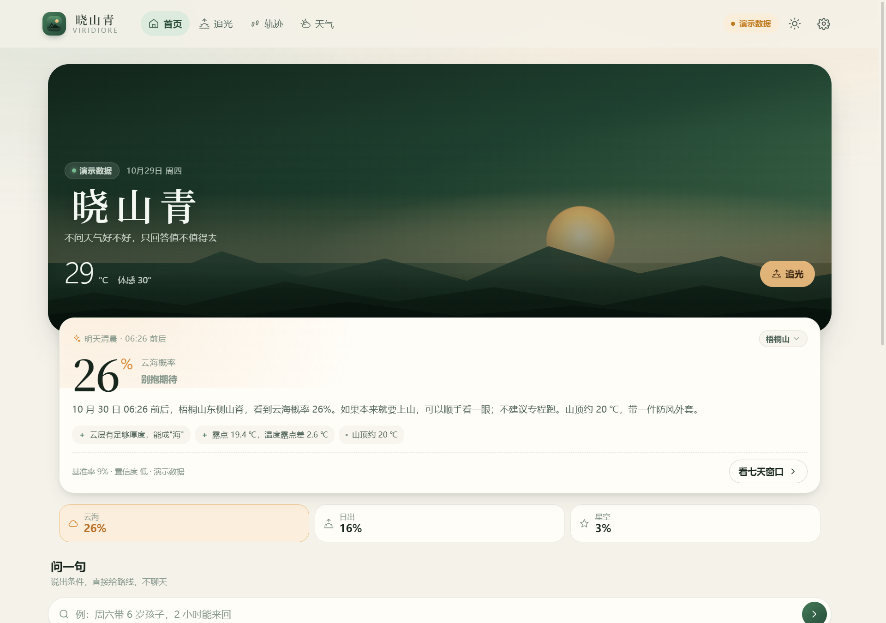
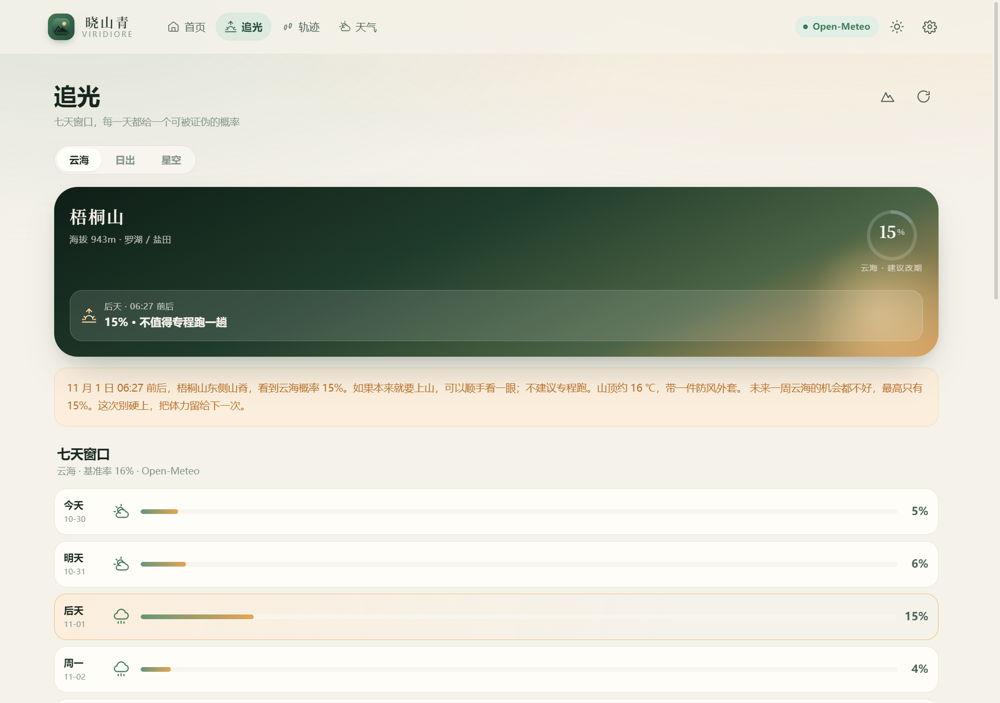
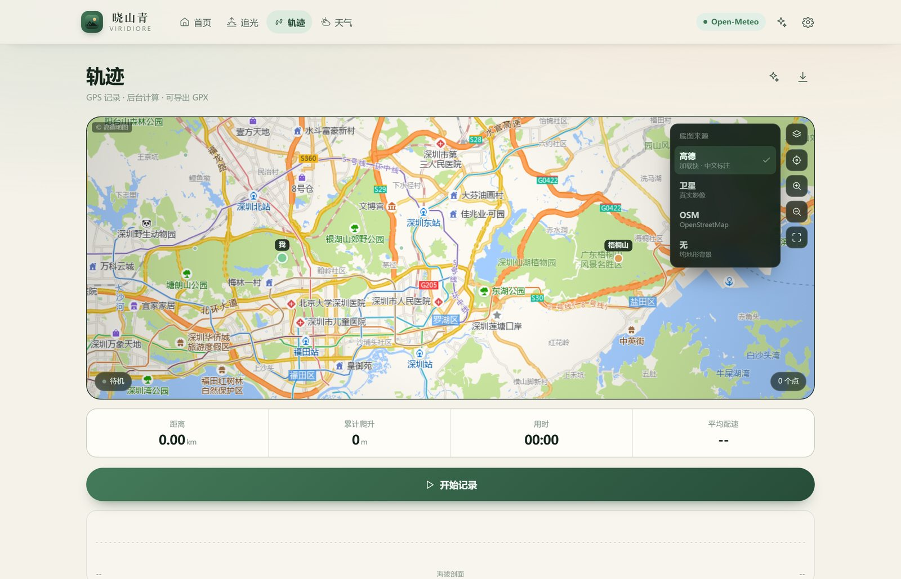

户外决策工具 · 深圳
不问天气好不好
只回答值不值得去
明早哪座山、几点出发、多大几率看到云海——算成一个百分比。算不出来，就直说。

01核心主张
给概率，
不给评分
明早 6:12 · 梧桐山东麓 · 云海概率
天气 App 告诉你「云量 30%」。这个数字对登山的人没有意义——你要知道的是云在不在你脚下。
所以晓山青只输出一个能被证伪的数字：明早 6:12，梧桐山东麓，云海概率 72%。下面永远跟着一行「基准率 16% · 置信度中」，以及每一项证据的加减值。
你可以反驳它。下次上山回来说一句「看到了」或「白跑一趟」，它会把误差记住。样本越多，它越不敢乱说。
100 分制是自说自话。百分比能被检验——第二天上山，看到或没看到，答案就写在那儿。
02怎么算的
云海不是心情，
是物理
模型不算「今天天气多好看」，只算三件事：云底多高、湿度够不够、层结稳不稳。
云底高度
LCL ≈ 125 m/℃ × (T − Td)
由气温与露点差反解抬升凝结高度，再叠加云层厚度估出云顶。云顶低于山顶，你站在云上；高于山顶，你在云里，什么都看不见。
露点差
T − Td ≤ 2 ℃
差得越小，空气越接近饱和。大于 6℃ 基本不会有成片的云，2℃ 以内是云海最容易成形的那一档。
逆温稳定
晴夜辐射降温 + 弱风
冷空气沉在谷底，暖空气盖在上面——这层盖子把云压住。风力超过 4 级，盖子就被搅散了。
逆温用 925 / 850 hPa 模式层结的温度直减率计算，不是拍脑袋的代理分；数据不够好时，界面会主动标注「置信度」——它会告诉你这个概率别太当真。
03产品
一屏之内，
把决定做完
打开就是答案：明早的概率、最佳窗口、去哪座山，以及每一项判断的依据。
04追光
把七天的窗口
排给你看
- 01云海 / 日出 / 星空三种模式，各自一套权重
- 02最佳日期与精确到分钟的时刻窗口
- 03该去哪个坡向、山顶温度、穿什么
- 04点开每一天，能看到证据的加减


05轨迹
山上没信号，
也照常记录
- 01距离、爬升、配速全在本地算（Web Worker）
- 02地图自绘，不依赖在线瓦片，断网也能记
- 03底图在高德 / 卫星 / OSM / 无之间实时切换
- 04可导出 GPX，轨迹只存在本机
06光之卡片
一次上山，
一张能发的图
时间、坐标、海拔、当时的天气，加一句写实的叙事，渲染成一张竖版卡片。
不是打卡，是把一次上山留下来。出发前还能生成「预测卡」，回来看命中没有——让每一次预测都有据可查。
真实
只写发生的事：几点、多少度、云在哪个高度，不替你编故事。
可复盘
预测卡与当天实况对照，命中与否都留下记录。
可分享
适合发出去的比例与清晰度，不加水印，不导流。
07诚实
一个预测工具，
最该做的是交代边界
下面几条写在 README 里，也写在设置页里。知道它什么时候不灵，比多一个漂亮数字重要。
01逆温用模式层结，不是探空实测
925 / 850 hPa 温度取自数值模式同化场，山区实际层结会偏差几度：逆温有无判得住，精确到米判不住。
02回测样本还不够
预测台账每天记一份、用 ERA5 再分析对账；真实样本到位前，校准曲线只显示「样本积累中」。
03地形只到山峰级别
没有做坡向与山谷的精细建模，所以「哪个坡向」给的是经验建议，不是计算结论。
04不会替你求救
没有真实短信网关与卫星通道的求救按钮，比没有更危险——相关功能已下架。
08底座
四端同源，
离线可用
同一套代码，四个端。所有轨迹与偏好只存在本机，不上传云端，也不需要注册账号。
不问天气好不好
只回答值不值得去
让每一次出发，都有依据。